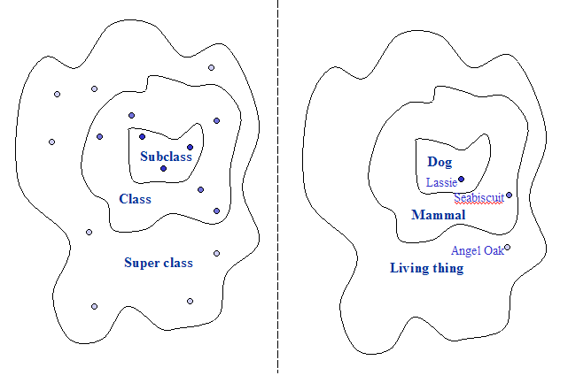
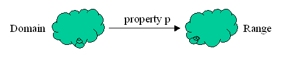
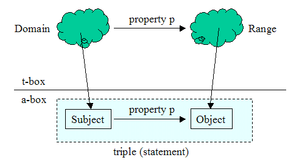
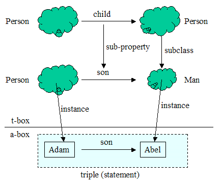

SADL is for modeling. Modeling is the process of creating a simplified representation of some part of the universe (of things or ideas). A model organizes that part of the universe that is of interest for some purpose. Of necessity, a model makes commitments to a particular way of organizing or viewing the world. We will take an approach to modeling that is consistent with the Web Ontology Language (OWL) since we wish ultimately to translate our models to that language.
The most fundamental concepts in modeling are those of a class, also sometimes called a category or a type, and an instance. Our discussion of modeling will be founded on set theory. A class is a set: a collection of instances (things) that are similar in some way that is of interest. It is useful to [partially] order classes into a hierarchy using the subset relationship. By definition, every member of a subset (subclass) is also a member the set (class). Such an ordering of classes is called a taxonomy. For example, all instances of Dog are also instances of Mammal so Dog is a subset (subclass) of Mammal. The relationships between instance, class, subclass, and super class are shown, with an Example, in Figure 1.

Figure 1: Class, Subclass, Super class, and Instances with an Example
The dots in Figure 1 represent instances, the bounded areas represent classes. Dog is a subclass of Mammal, which is a subclass of Living thing. Lassie is an instance of a Dog, of a Mammal, and of a Living thing. Seabiscuit is an instance of a Mammal and of a Living thing but is not an instance of a Dog. (Seabuscuit is an instance of a Horse.) Angel Oak, a famous Tree, is an instance of a Living thing but is not an instance of a Mammal nor of a Dog.
Syntax:
Concept SADL Syntax (Template) Examples A class (set) only has as [defined] superset the set of all things New_Name is a top-level class. Rock is a top-level class. A class (set) is a sub-class (subset) of another class (set) New_Name is a type of Existing_Name. PetRock is a type of Rock. Multiple sub-classes can be defined together, improving the organization and readability of the model {New_Name-1,New_Name-2} are types of Existing_Name. {Granite, Limestone, Marble, Sandstone} are types of Rock. An instance belongs to a specified class (set) Instance_Name is an Existing_Name. GaryDahlsBaby is a PetRock.
Exercise 1: Build a SADL model representing the information in the right-hand side of Figure 1. Add a test that confirms that Lassie is an instance of Living thing.
While one can declare that something is a class, that does not specify what instances belong to the class. It would be useful to make class declarations more informative. There are two kinds of class definitions:
Syntax:
Concept SADL Syntax (Template) Examples Extensional (enumerated) class New_Name is a top-level class, must be one of {Inst1,Inst2,Inst3}. Gender is a top-level class, must be one of {Male, Female}.
Season is a top-level class, must be one of {Spring, Summer, Fall, Winter}.
There is one more thing to consider: when does it make more sense to create a concept as an instance and when does it make more sense to create it is class? The answer, like the answer to most model questions, is it depends on the purpose of your model. Generally speaking, you might create an instance when something is truly unique--there is only one of them in the domain - or when the instance is an invariant for purposes of the model--you never wish to consider variations in the concept. In the first of the two examples above, "Male" can probably be adequately modeled as an instance because the "maleness" is, for all practical purposes, the same across subjects which may have this instance as the value of the property, e.g., "gender". In the second example above, "Spring" can be modeled as an instance only if we do not wish to distinguish one spring from another. If, on the other hand, the purpose of our model is to represent historical information about weather then this may not be appropriate. If we wish to characterize the spring of a particular year as being warm or cold, wet or dry, etc., then Spring will need to be a class so that a specific spring can be the subject of statements indicating the year of which the instance is a part, the temperature, the rainfall, etc.
To further illustrate this point, suppose that we model Spring as an instance but then create additional instances of Season with various attributes. Instead of being able to use the reasoner to classify these instances, we would be forced to state that particular instances of Season are the same individual as our instance Spring. That would be most inconvenient! A reasoner would then also conclude that all of the properties of each of these instances of Season are also properties of all of the other instances (since they are all the same instance). Thus a particular spring might be both wet and dry, warm and cold, etc. This illustrates a mismatch between the purpose of our model and the conceptualization of Spring as an instance; here Spring should be a class as there will be multiple instances of Spring with varying properties which we wish to represent.
A third fundamental concept in modeling is that of a property, also sometimes called an attribute or a relationship. A property is the generalization of an association between an instance of something and some other instance or value. For example, in the physical world we usually think of living things as having an age. Since lots of instances have this property (age), it's useful to create a property in our model (a generalization) of that name. The age of a living thing usually has a numerical value--we count age (time) in some unit (rotations of the earth, phases of the moon, etc.). For example, the Angel Oak has as value of age of about 1400 [years].
An example of a property relating two instances is friendship. It generalizes what can be observed repeatedly to exist between two people. An historical example of friendship is the relationship between David and Jonathan.
Using instances and properties, we can make statements about what exists. These are in the form of a simple sentence: <subject> <property> <object>. For example, "Adam wife Eve" or "Adam weight 175." (Modeling units of numerical values is a bit more complex.) We call such a statement or a triple.
Syntax:
Concept SADL Syntax (Template) Examples A triple (statement) specifies a property of an instance Instance_Name has existing_Property Value. Adam
has wife Eve.
Adam has weight 175 .Triples can be combined to group information about a common subject. Instance_Name has existing_Property1 Value1, has existing_Property2 Value2. Adam has wife Eve, has weight 175 . Instance declaration and attribution can be combined for better organization and readability Instance_Name is an Existing_Name, has existing_Property Value. Adam is a Person, has wife Eve, has weight 175 . Note: the period at the end of a statement that ends with a number must have a space before the period to distinguish it from a decimal point.
We can significantly increase the level of organization in our model by specifying the types of things that a property can relate. Properties are directional. Consider the subclass property: every Dog is a Mammal, but not every Mammal is a Dog. By convention, we will say that the direction of a property is from the subject of a triple (statement) using the property to the object. With this direction in mind, the set of things which can be the subject of a triple using a given property is called the domain of that property. The set of things which can be the object of such a triple is called the range of the property. Of course the sets which are the domain and range can be, and usually are, defined in terms of other sets. Figure 2 shows the domain and range of the property p.

Figure 2: Domain and Range of a
Property p
Syntax:
Concept SADL Syntax (Template) Examples The definition of a property in SADL includes the domain class and range class or primitive data type. new_Property describes Domain_Name has values of type Range_Name. weight describes Rock has values of type float.
gender describes Person has values of type Gender.Property definitions can be combined with class definitions. New_Name is a type of Existing_Name, described by new_Property with values of type Range_Name. PetRock is a type of Rock, described by name with values of type string.
Person is a top-level class, described by gender with values of type Gender.Note: the primitive data types that can be used in range declarations in SADL are boolean, date, double, float, int, and string.
Exercise 2: Add the properties age and weight to the appropriate class in the model you built in exercise 1. Add triples stating values of these properties for the instances in exercise 1.
In organizing our universe, it can be helpful to divide our model into two parts. The first is a description of what can exist, which will include definitions of the classes and properties. We call this the "t-box". The second part is the "a-box"--a description of what actually does exist, which will include the instances and the actual properties of and relationships that exist between those instances. While the t-box is actually expressed in triples in the OWL model, we don't see most of the t-box as triples. However, the instance data in the a-box is more clearly composed of triples, as shown in Figure 2.

Figure 3: Relationships between t-box and a-box concepts
Figure 3 shows the domain and range in the t-box and their relationship to triples in the a-box. Figure 4 expands the ideas in Figure 3 to include subclass and sub-property concepts in the form of a specific example. Note that the subclass relationship shown with Venn Diagram notation in Figure 1 are represented in Figure 4 with an arrow labeled "subclass".

Figure 4: Example of domain, range, subclass, sub-property, with mapping to instances and triple in the a-box
In Figure 4, "son" is a sub-property of "child". It is a more narrowly defined property with a range which is a subclass of the range of "child". It is the case that for every triple in the a-box with the property "son" one could infer a triple with the same subject and object. For example, "Adam --> son --> Abel" implies that it is also the case that "Adam --> child --> Abel." More formally, if property p1 is a sub-property of p2, then the property extension of p1 (all of the subject-object pairs from triples having p1 as the property) is a subset of the property extension of p2.
Exercise 3: a) Build the model shown in Figure 4. Try some variations: b) if Abel is declared to be an instance of Person and son of Adam, is Abel inferred to be an instance of Man? c) if Abel is declared to be an instance of Man and child of Adam, is Abel inferred to be a son of Adam?
That's the basics--classes, instances, and properties. In case you didn't notice, in SADL class names are dark blue bold, instance names are light blue, and property names are green bold. Keywords are magenta.
By convention, class and instance names start with Upper case and property names start with lower case.